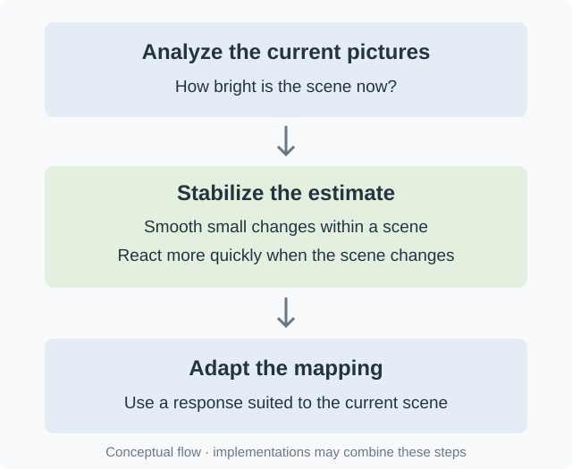

Scene-Adaptive Tone Mapping
A dark conversation and a sunlit landscape do not need the same compromise between midtones and highlights. Scene-adaptive tone mapping can adjust to their different brightness distributions instead of using one fixed mapping throughout the film.
The information may come from dynamic metadata or from analysis of the picture. Measuring content during playback can make a mapping adaptive even when the file has no scene-by-scene metadata. This does not add an authored creative decision that was absent from the source; it lets the renderer make a more informed estimate.

Conceptual processing flow. It does not describe a specific Emby implementation.
React quickly, but not to everything
Changing the mapping independently for every frame can make an otherwise steady object seem to pulse when a bright object enters the shot. Temporal smoothing reduces that instability. Too much smoothing, however, can make the mapper slow to respond when the film cuts from a dark room to daylight.
Scene-change handling helps resolve that tension. For example, libplacebo's peak detector can reduce smoothing when the change in brightness is large enough. This is an implementation example, not a universal rule for detecting an edit or a promise about an Emby setting.
Adaptive also does not necessarily mean local: a mapper can change over time while still applying the same curve across the whole frame. Processing different parts of one frame differently is a separate choice.
When assessing an Emby playback result, let the scene run. Watch a face as a bright window enters the frame, and watch the first moments after a hard cut. Stable midtones and a clean transition tell you more than a particularly attractive screenshot. A visible brightness change can also come from the source or the display's own processing, so it is useful to establish where tone mapping occurs before attributing it to the server.
See Also
- Peak-Luminance Detection for Tone Mapping
- Highlight Roll-Off in Tone Mapping
- What a Tone-Mapping Curve Controls